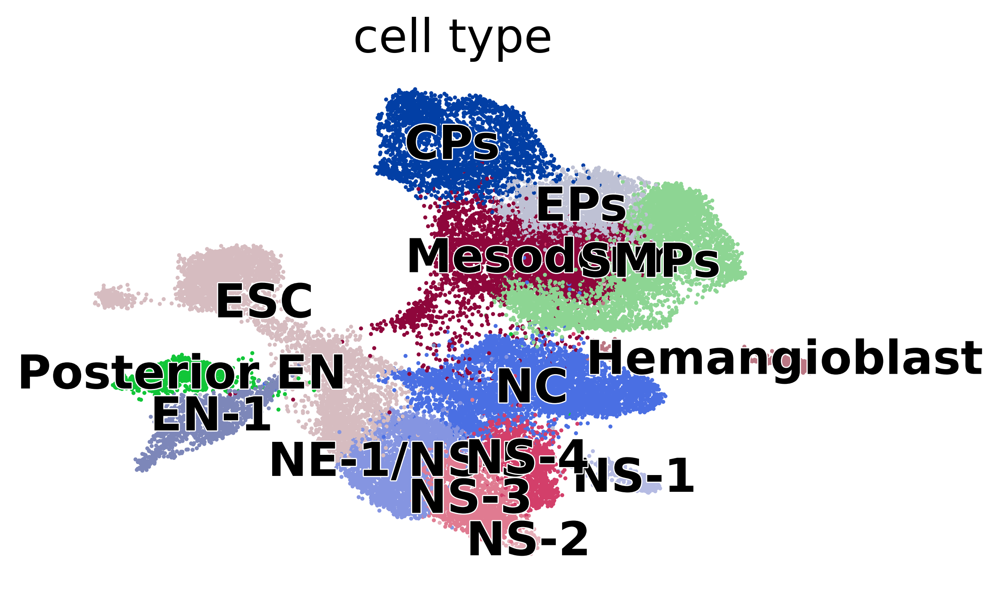
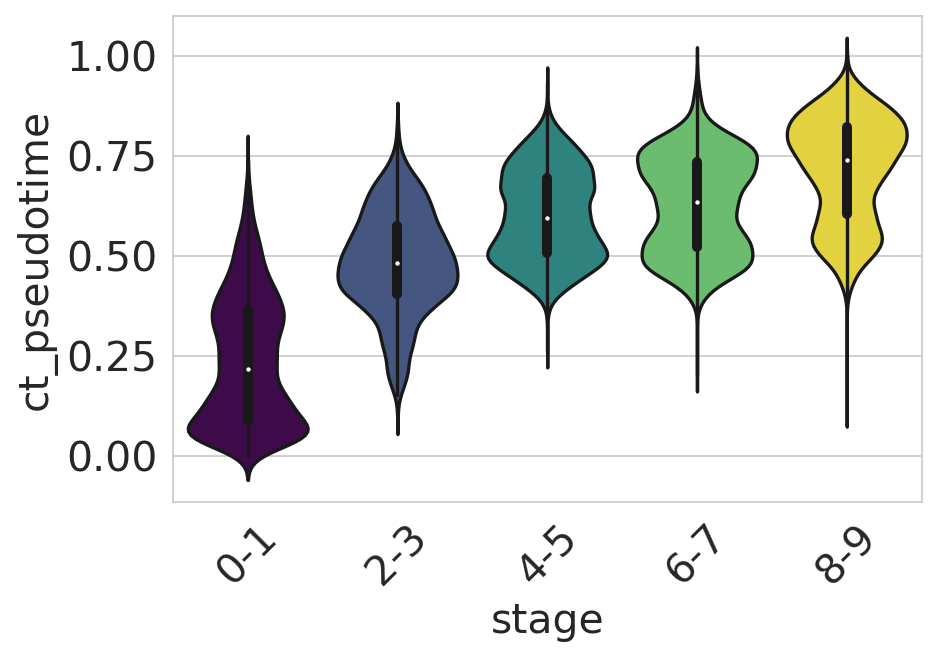

Embryoid body development - CytoTRACE-based analysis#
Construct CytoTRACE score for embryoid body development and analyse data with the CytoTRACEKernel.
Library imports#
import os
import sys
import numpy as np
import pandas as pd
import matplotlib.pyplot as plt
import seaborn as sns
import cellrank as cr
import scanpy as sc
import scvelo as scv
from cr2 import get_state_purity, plot_state_purity, plot_states, running_in_notebook
sys.path.extend(["../../../", "."])
from paths import DATA_DIR, FIG_DIR # isort: skip # noqa: E402
Global seed set to 0
General settings#
sc.settings.verbosity = 2
cr.settings.verbosity = 4
scv.settings.verbosity = 3
scv.settings.set_figure_params("scvelo", dpi_save=400, dpi=80, transparent=True, fontsize=20, color_map="viridis")
SAVE_FIGURES = False
if SAVE_FIGURES:
os.makedirs(FIG_DIR / "cytotrace_kernel" / "embryoid_body", exist_ok=True)
Data loading#
adata = sc.read(DATA_DIR / "embryoid_body" / "embryoid_body.h5ad")
adata
AnnData object with n_obs × n_vars = 31029 × 19122
obs: 'stage', 'n_genes_by_counts', 'total_counts', 'total_counts_mt', 'pct_counts_mt', 'leiden', 'cell_type'
var: 'n_cells', 'mt', 'n_cells_by_counts', 'mean_counts', 'pct_dropout_by_counts', 'total_counts', 'highly_variable', 'means', 'dispersions', 'dispersions_norm'
uns: 'hvg', 'leiden', 'log1p', 'neighbors', 'pca', 'umap'
obsm: 'X_pca', 'X_umap'
varm: 'PCs'
obsp: 'connectivities', 'distances'
if running_in_notebook():
scv.pl.scatter(adata, basis="umap", c="stage", palette="viridis")
if SAVE_FIGURES:
fig, ax = plt.subplots(figsize=(6, 4))
scv.pl.scatter(adata, basis="umap", c="stage", title="", legend_loc=False, palette="viridis", ax=ax)
fig.savefig(
FIG_DIR / "cytotrace_kernel" / "embryoid_body" / "umap_colored_by_stage.eps",
format="eps",
transparent=True,
bbox_inches="tight",
)

if running_in_notebook():
scv.pl.scatter(adata, basis="umap", c="cell_type", dpi=200)
if SAVE_FIGURES:
fig, ax = plt.subplots(figsize=(6, 4))
scv.pl.scatter(adata, basis="umap", c="cell_type", title="", legend_loc=False, ax=ax)
fig.savefig(
FIG_DIR / "cytotrace_kernel" / "embryoid_body" / "umap_colored_by_cell_type.eps",
format="eps",
transparent=True,
bbox_inches="tight",
)

Data preprocessing#
adata.layers["spliced"] = adata.X
adata.layers["unspliced"] = adata.X
scv.pp.moments(adata, n_pcs=None, n_neighbors=None)
computing moments based on connectivities
finished (0:00:37) --> added
'Ms' and 'Mu', moments of un/spliced abundances (adata.layers)
CellRank#
Kernel#
ctk = cr.kernels.CytoTRACEKernel(adata)
ctk.compute_cytotrace()
Computing CytoTRACE score with `19122` genes
DEBUG: Correlating all genes with number of genes expressed per cell
Adding `adata.obs['ct_score']`
`adata.obs['ct_pseudotime']`
`adata.obs['ct_num_exp_genes']`
`adata.var['ct_gene_corr']`
`adata.var['ct_correlates']`
`adata.uns['ct_params']`
Finish (0:00:01)
CytoTRACEKernel[n=31029]
if running_in_notebook():
scv.pl.scatter(
adata,
c=["ct_pseudotime", "stage"],
basis="umap",
legend_loc="right",
color_map="viridis",
)
if SAVE_FIGURES:
fig, ax = plt.subplots(figsize=(6, 4))
scv.pl.scatter(
adata, basis="umap", c="ct_pseudotime", title="", colorbar=False, color_map="gnuplot2", show=False, ax=ax
)
fig.savefig(
FIG_DIR / "cytotrace_kernel" / "embryoid_body" / "umap_colored_by_ct_pseudotime.eps",
format="eps",
transparent=True,
bbox_inches="tight",
)

df = adata.obs[["ct_pseudotime", "stage"]].copy()
if running_in_notebook():
sns.set_style(style="whitegrid")
fig, ax = plt.subplots(figsize=(6, 4))
sns.violinplot(
data=df,
x="stage",
y="ct_pseudotime",
scale="width",
palette=["#440154", "#3b528b", "#21918c", "#5ec962", "#fde725"],
ax=ax,
)
ax.tick_params(axis="x", rotation=45)
ax.set_yticks([0, 0.25, 0.5, 0.75, 1])
plt.show()
sns.reset_orig()
if SAVE_FIGURES:
sns.set_style(style="whitegrid")
fig, ax = plt.subplots(figsize=(6, 4))
sns.violinplot(
data=df,
x="stage",
y="ct_pseudotime",
scale="width",
palette=["#440154", "#3b528b", "#21918c", "#5ec962", "#fde725"],
ax=ax,
)
ax.set(xlabel=None, xticklabels=[], ylabel=None, yticklabels=[])
fig.savefig(
FIG_DIR / "cytotrace_kernel" / "embryoid_body" / "cytotrace_vs_stage.eps",
format="eps",
transparent=True,
bbox_inches="tight",
)
sns.reset_orig()

ctk.compute_transition_matrix(threshold_scheme="soft", nu=0.5)
Computing transition matrix based on pseudotime
Finish (0:00:19)
CytoTRACEKernel[n=31029, dnorm=False, scheme='soft', b=10.0, nu=0.5]
Estimator#
estimator = cr.estimators.GPCCA(ctk)
estimator.compute_schur(n_components=20)
if running_in_notebook():
estimator.plot_spectrum(real_only=True)
plt.show()
Computing Schur decomposition
Adding `adata.uns['eigendecomposition_fwd']`
`.schur_vectors`
`.schur_matrix`
`.eigendecomposition`
Finish (0:00:02)
estimator.compute_macrostates(20, cluster_key="cell_type")
if running_in_notebook():
plot_states(
adata,
estimator=estimator,
which="macrostates",
basis="umap",
legend_loc="right",
title="",
size=100,
)
if SAVE_FIGURES:
fpath = FIG_DIR / "cytotrace_kernel" / "embryoid_body" / "umap_colored_by_cytotrace_macrostates.pdf"
plot_states(
adata,
estimator=estimator,
which="macrostates",
basis="umap",
legend_loc=False,
title="",
size=100,
fpath=fpath,
format="pdf",
)
Computing `20` macrostates
DEBUG: Setting the macrostates using macrostates memberships
DEBUG: Raising an exception if there are less than `6` cells.
Adding `.macrostates`
`.macrostates_memberships`
`.coarse_T`
`.coarse_initial_distribution
`.coarse_stationary_distribution`
`.schur_vectors`
`.schur_matrix`
`.eigendecomposition`
Finish (0:07:40)

macrostate_purity = get_state_purity(adata, estimator, states="macrostates", obs_col="cell_type")
print(f"Mean purity: {np.mean(list(macrostate_purity.values()))}")
if running_in_notebook():
if SAVE_FIGURES:
fpath = FIG_DIR / "cytotrace_kernel" / "embryoid_body" / "cytotrace_macrostate_purity.pdf"
else:
fpath = None
palette = dict(zip(estimator.macrostates.cat.categories, estimator._macrostates.colors))
plot_state_purity(macrostate_purity, palette=palette, fpath=fpath, format="eps")
plt.show()
Mean purity: 0.9683333333333334
estimator.set_terminal_states(
[
"EN-1_1",
"Posterior EN_1",
"NC",
"NS-1",
"NS-2",
"NS-3",
"NE-1/NS-5",
"CPs_4",
"SMPs_1",
"EPs",
"Hemangioblast",
]
)
if running_in_notebook():
plot_states(
adata,
estimator=estimator,
which="terminal_states",
basis="umap",
legend_loc="right",
title="",
size=100,
fpath=fpath,
format="pdf",
)
if SAVE_FIGURES:
fpath = FIG_DIR / "cytotrace_kernel" / "embryoid_body" / "umap_colored_by_cytotrace_terminal_states.pdf"
plot_states(
adata,
estimator=estimator,
which="terminal_states",
basis="umap",
legend_loc=False,
title="",
size=100,
fpath=fpath,
format="pdf",
)
DEBUG: Raising an exception if there are less than `6` cells.
Adding `adata.obs['term_states_fwd']`
`adata.obs['term_states_fwd_probs']`
`.terminal_states`
`.terminal_states_probabilities`
`.terminal_states_memberships
Finish`

macrostate_purity = get_state_purity(adata, estimator, states="terminal_states", obs_col="cell_type")
print(f"Mean purity: {np.mean(list(macrostate_purity.values()))}")
if running_in_notebook():
if SAVE_FIGURES:
fpath = FIG_DIR / "cytotrace_kernel" / "embryoid_body" / "cytotrace_terminal_states_purity.pdf"
else:
fpath = None
palette = dict(zip(estimator.terminal_states.cat.categories, estimator._term_states.colors))
plot_state_purity(
macrostate_purity,
palette=palette,
order=["EN-1_1", "Posterior EN_1", "NC", "NS-1", "NS-2", "NS-3", "NE-1/NS-5", "SMPs_1", "EPs", "Hemangioblast"],
fpath=fpath,
format="eps",
)
plt.show()
Mean purity: 0.9818181818181819
estimator.compute_fate_probabilities(tol=1e-7)
if running_in_notebook():
estimator.plot_fate_probabilities(same_plot=False, basis="umap", ncols=3)
if SAVE_FIGURES:
for terminal_state in estimator.terminal_states.cat.categories:
adata.obs[f"fate_prob_{terminal_state}"] = adata.obsm["lineages_fwd"][:, terminal_state].X.squeeze()
fig, ax = plt.subplots(figsize=(6, 4))
if running_in_notebook():
scv.pl.scatter(
adata,
basis="umap",
color=f"fate_prob_{terminal_state}",
cmap="viridis",
title="",
colorbar=False,
ax=ax,
)
fig.savefig(
FIG_DIR / "cytotrace_kernel" / "embryoid_body" / "cytotrace_fate_prob_{terminal_state}.eps",
format="eps",
transparent=True,
bbox_inches="tight",
)
Computing fate probabilities
DEBUG: Solving the linear system using `PETSc` solver `'gmres'` on `1` core(s) with no preconditioner and `tol=1e-07`
Adding `adata.obsm['lineages_fwd']`
`.fate_probabilities`
Finish (0:00:02)
[0]PETSC ERROR: ------------------------------------------------------------------------
[0]PETSC ERROR: Caught signal number 13 Broken Pipe: Likely while reading or writing to a socket
[0]PETSC ERROR: Try option -start_in_debugger or -on_error_attach_debugger
[0]PETSC ERROR: or see https://petsc.org/release/faq/#valgrind and https://petsc.org/release/faq/
[0]PETSC ERROR: configure using --with-debugging=yes, recompile, link, and run
[0]PETSC ERROR: to get more information on the crash.
Abort(59) on node 0 (rank 0 in comm 0): application called MPI_Abort(MPI_COMM_WORLD, 59) - process 0
Driver analysis#
drivers_en_1 = estimator.compute_lineage_drivers(
return_drivers=True, cluster_key="cell_type", lineages=["EN-1_1"], clusters=["ESC"]
)
if running_in_notebook():
estimator.plot_lineage_drivers(lineage="EN-1_1", n_genes=20, ncols=5, title_fmt="{gene} corr={corr:.2}")
plt.show()
DEBUG: Computing correlations for lineages `['EN-1_1']` restricted to clusters `['ESC']` in layer `X` with `use_raw=False`
Adding `adata.varm['terminal_lineage_drivers']`
`.lineage_drivers`
Finish (0:00:00)
if SAVE_FIGURES:
for var_name in ["FOXA2", "SOX17"]:
fig, ax = plt.subplots(figsize=(6, 4))
scv.pl.scatter(adata, basis="umap", color=var_name, ax=ax)
fig.savefig(
FIG_DIR / "cytotrace_kernel" / "embryoid_body" / f"umap_colored_by_{var_name.lower()}.eps",
format="eps",
transparent=True,
bbox_inches="tight",
)
human_tfs = pd.read_csv(DATA_DIR / "generic" / "human_tfs.csv", index_col=0)["HGNC symbol"].str.lower().values
n_top_genes_tfs = (
adata.varm["terminal_lineage_drivers"]["EN-1_1_corr"]
.sort_values(ascending=False)
.index[:50]
.str.lower()
.isin(human_tfs)
.sum()
)
print(f"Number of TFs in top 50 genes: {n_top_genes_tfs}")
Number of TFs in top 50 genes: 13
model = cr.models.GAM(adata)
if SAVE_FIGURES:
save = FIG_DIR / "cytotrace_kernel" / "embryoid_body" / "heatmap_en_1_lineage.pdf"
else:
save = None
cr.pl.heatmap(
adata,
model,
genes=adata.varm["terminal_lineage_drivers"]["EN-1_1_corr"].sort_values(ascending=False).index[:50],
show_fate_probabilities=False,
show_all_genes=True,
lineages="EN-1_1",
time_key="ct_pseudotime",
figsize=(10, 15),
save=save,
)
plt.show()
Computing trends using `1` core(s)
Finish (0:00:11)
DEBUG: Plotting `'lineages'` heatmap
[0]PETSC ERROR: ------------------------------------------------------------------------
[0]PETSC ERROR: Caught signal number 13 Broken Pipe: Likely while reading or writing to a socket